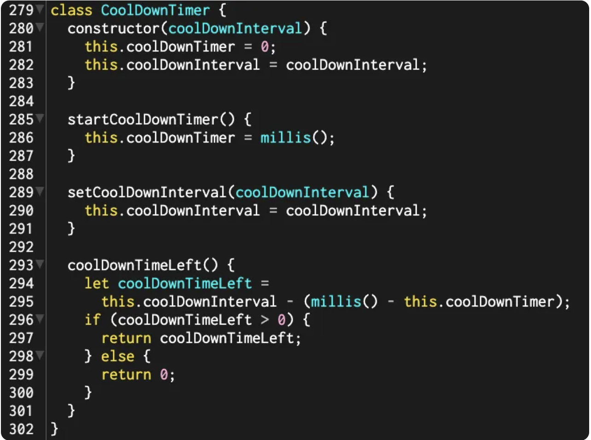

Spillet tager udgangspunkt i følgende bib-bib spil fra 1980’erne.

Grafikken er lavet ved at tage billeder af bib-bib spillet med en mobil telefon

Man markerer den bil man gerne vil gemme.

Og vælger “New from Clipboard”.

Man kan nu med den lille tryllestav vælge bilen

når man trykker delete (backspace) så slettes baggrunden, så den bliver transparent.

Note: Man kan også slette baggrunden ved brug af Losso Selection.

Bilerne i spillet er pladseret i en tabel

Vi navngiver derfor bilen vi gemte carR2C2 (det står for Row 2, Column 2)
Det er vigtigt at vi gemmer bilen i et nyt billede hvor siderne er lige lange. Dette gør at vi nemmere kan ændre størrelsen af billedet i spillet. Det er nemmest hvis man gør dette når man vælger bilen man gerne vil gemme. Man kan dog også gøre det bagefter ved at gøre følgende:
Dette gøres ved at markere billedet og trykke Control-C (copy)

Vælge Tools og Adjust Size:


Slå låsen fra og tilrette Width og Height til at være den største værdi af de to værdier

Herefter kan man markere indholdet

Slette indholdet og paste bilen som vi kopierede ind.

Vi skal også bruge et baggrundsbillede uden biler. Vi skal derfor fjerne bilerne fra baggrundsbilledet. Vælg først “Show Markup Toolbar”

og herefter Lasso Selection

Vi markerer et område ved siden af bilen som vi gerne vil fjerne:

Og trykker Control-C og Control-V. Herefter kan vi flytte området over den bil som vi vil fjerne

Hvorefter bilen er forsvundet

Vi skal også gemme små lydklip:
Lydene til spillet kan klippes fra følgende video: https://youtu.be/HNGhO1ZJgUE
Dette gøres ved at oprette en ny Movie i iMovie

og importere videoen

Hvorefter man skal trække videoen ned

Man kan zoome på den her slider vist øverst til højre på billedet nedenfor og finde det lydklip som man gerne vil lave til en mp3 fil med.
Man kan nu vælge Split Clip på begge sider af lydklippet

Og slette højre og venstre side, så der kun er det lille lydklip tilbage.

Man kan nu vælge File → Share → File

Og gemme det som Audio only + MP3 format

Vi skal også pladsere bilerne på baggrundsbilledet. Vi starter med at oprette en mappe ved navn images

Her vælger vi Upload file

Og trækker alle billederne ind (man kan vælge alle billederne og trække dem alle ind samtidig)

Vi starter med at lave en ny fil ved navn library.js

Vi skal huske at referere til den i index.html filen (den skal stå før sketch.js)

I library.js skal vi importere alle grafik elementerne. Dette gøres i preload funktionen som bliver kørt inden setup funktionen (så billerne er loadet ind og klar til brug når programmet starter med at afvikle)

I Grand Prix spillet er bilerne arrangeret i en tabel

For at overskue koordinaterne til bilerne samt deres størrelse bedst mulig kan man oprette hver bil som et imageObject og lægge dem ind i en tabel. Her betyder carPos[0][0] række 0 og kolonne 0. carPos[0][1] betyder række 0 og kolonne 1 osv. Og have en funktion til at vise hver bil i tabellen (displayCar).

De objekter der ikke er i en tabel (f.eks. manden med flaget) kan vi bare vise uden først at putte dem ind i et image objekt.

I sketch.js skal vi bare vise alle objekterne

Når vi har lavet setup’et i library.js og sketch.js, så er det bare et spørgsmål om tid og fokus for at få pladseret alle grafik elementerne korrekt.
Vi har også behov for at have en timer der tæller ned fra et antal millisekunder. Her kan man sætte et coolDownInterval f.eks. 1000 ms (dvs 1 sekund). Man kan starte, så this.cookDownTimer sættes til værdien af millis(). Når man kalder funktionen coolDownTimeLeft, så returneres coolDownInterval (f.eks. 1000) minus forskellen mellem den nye værdi af millis() og den værdi som millis() havde da vi startede timeren, dvs. at timeren tæller ned fra 1000 millisekunder.
